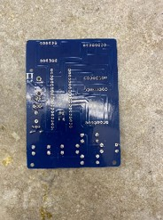
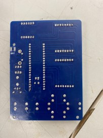

Pressing Charges
For this project, I was given a soldering kit for a small handheld gaming console. The objective of this lesson was to teach us how to identify and understand the importance of each component of the console. We were able to practice through-hole soldering on a variety of components, and I also experimented with solder paste. I also learned how to operate the solder-sucker gun when I was fixing some issues I encountered during soldering.
NB: All of the images I took got hypercompressed far more than usual. I'm not exactly sure why this is the case as they look fine on my end. However, this should not affect the documentation as all key features are still visible.
I first took all of the parts out of the kit.

I then further unboxed all of the electronics components to ensure that I had everything.
 |
 |
Next, I identified all of my parts to prepare them for soldering.

I then soldered on the 10uF capacitor, ceramic 104 capacitor, on/off tactile button switch, speaker, 1k ohm resistor, and triode.
 |
 |
Next, I soldered on the 5 control buttons.
 |
 |
I then soldered on the LED display and the USB power base.
 |
 |
I soldered on the base that would hold the chip in place and connect its pins to the PCB traces. I was able to use solder paste for this component as it was a lot of solder holes all lined up together.
 |
 |
I then soldered on the 2 LED dot matrices. This was the only major problem I ran into during this project, as I misread the polarity of the dot matrices and soldered both on backwards. However, due to this rather significant mistake, I was able to learn how to use the solder sucker gun, which was incredibly effective and even surprised me in that it allowed me to unsolder over 30 joints in just a few minutes. After correcting the polarity of the LED matrices, this is what my board looked like.
 |
 |
I then pushed the chip into the chip holder. This took a bit of work to align each pin and I used tweezers to push in a couple of stubborn pins that refused to go into their spots. After pushing in the chip, these two images are the final images of the front and back of my board respectively without the installation of button caps.
 |
 |
I then put on the button caps and assembled the acrylic case for the board.

Here is a video of my completely assembled console while I play tetris on it.
Overall, this unit was pretty straightforward and relatively simple. The only major issue I encountered along the way was misreading the polarity of the LED matrices and soldering them on backwards. However, this was a great opportunity to learn how to use the solder-sucker gun, which proved to be incredibly effective in allowing me to remove and resolder the matrices on. I was so impressed by the solder-sucking gun that I would end up using it on other projects such as the production of a SAMD11C PCB where I accidentially soldered a component on backwards.